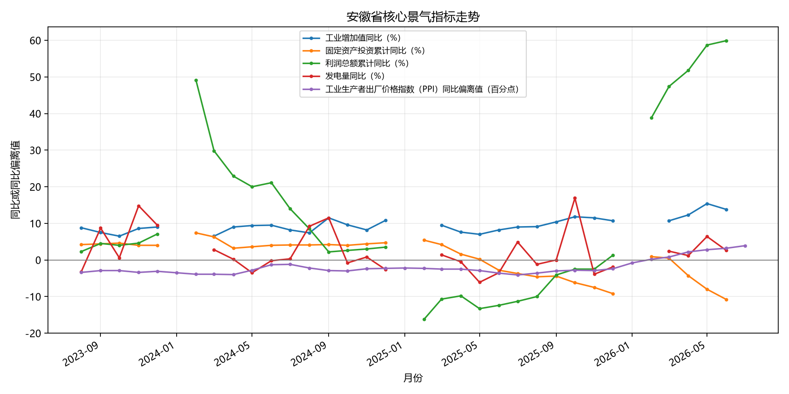
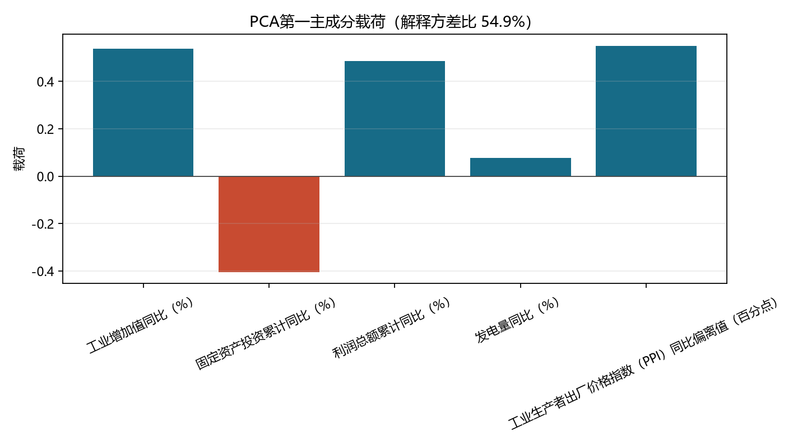
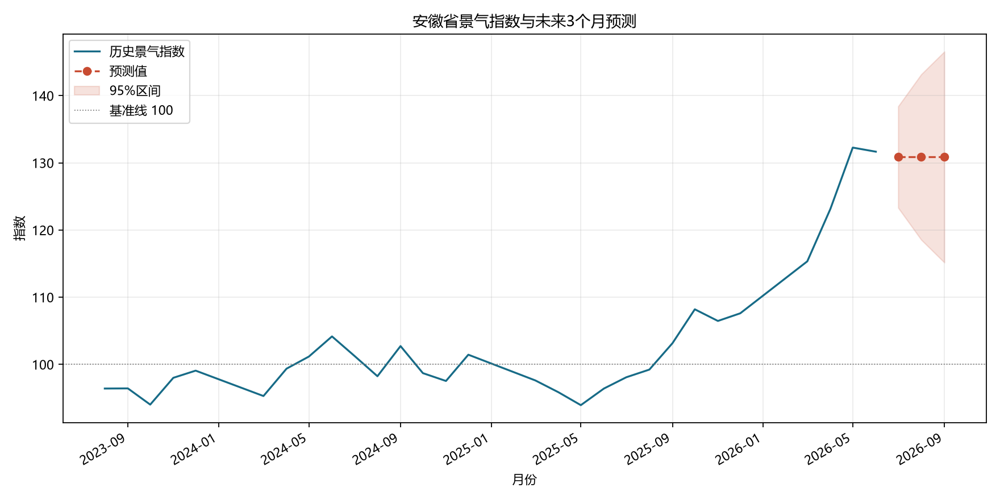
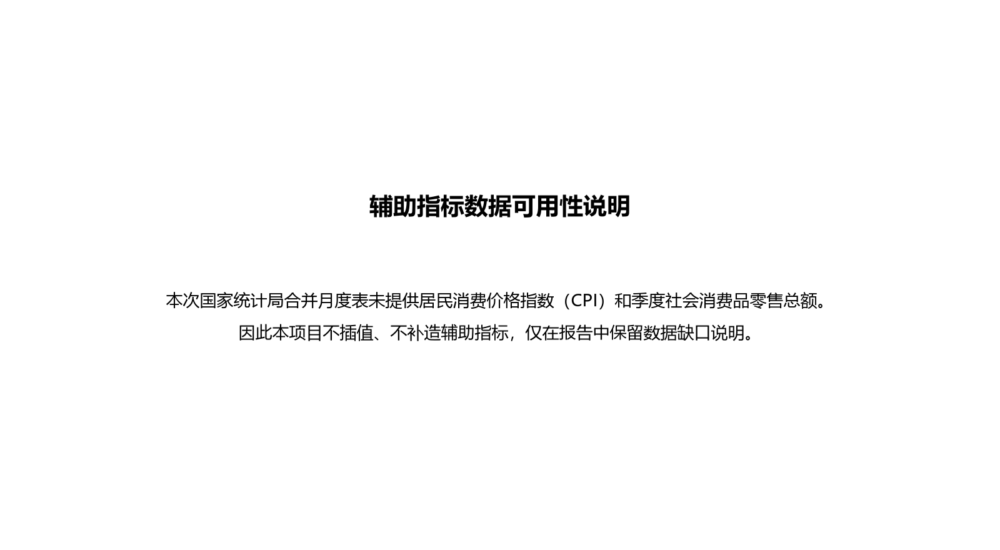

本报告基于国家统计局分省月度数据，使用主成分分析（PCA）构建综合景气指数，并对未来三个月进行短期预测。


| 指标 | 主成分分析载荷（PCA） |
|---|---|
| 工业增加值同比（%） | 0.537625 |
| 固定资产投资累计同比（%） | -0.405142 |
| 利润总额累计同比（%） | 0.487059 |
| 发电量同比（%） | 0.077254 |
| 工业生产者出厂价格指数（PPI）同比偏离值（百分点） | 0.551023 |

以下是模型与季节性朴素基线的误差对比。平均绝对误差（MAE）和均方根误差（RMSE）越小，表示预测误差越小。
| 模型 | 预测期限（月） | 平均绝对误差（MAE） | 均方根误差（RMSE） | 预测点数 |
|---|---|---|---|---|
| 季节性 ARIMA 模型（SARIMA） | 1 | 3.830117 | 4.617937 | 16 |
| 季节性 ARIMA 模型（SARIMA） | 2 | 4.943663 | 6.491941 | 30 |
| 季节性 ARIMA 模型（SARIMA） | 3 | 5.992436 | 8.124920 | 42 |
| 12个月季节朴素 | 1 | 9.931766 | 14.953091 | 16 |
| 12个月季节朴素 | 2 | 9.363702 | 13.990607 | 30 |
| 12个月季节朴素 | 3 | 8.591356 | 12.827454 | 42 |
